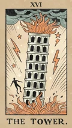
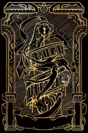

The White Tower Pathway, also called the Reader Pathway, represents the search for knowledge and combines scientific with mysticism knowledge. Its high-sequence Beyonders can see possible futures, analyze and use fundamental principles of reality, and reveal information about people; its Above the Sequence is God Almighty and its Sefirah is the Chaos Sea.
Pathway progression and late-sequence details contain major story spoilers.Overview
The White Tower Pathway, also called the Reader Pathway, represents the search for knowledge and combines scientific with mysticism knowledge. Its high-sequence Beyonders can see possible futures, analyze and use fundamental principles of reality, and reveal information about people; its Above the Sequence is God Almighty and its Sefirah is the Chaos Sea.
Paraphrased from the Fandom pathway article..
Complete wiki information
Full main-article information imported from the White Tower Pathway wiki article. Existing archive pathway details above are preserved.
We basically came to a consensus and believe that the Reader pathway represents the ‘omniscient’ part of ‘omnipotent and omniscient.’
Overview
The White Tower Pathway represents the search for knowledge. In contrast to Hermit Pathway and Paragon Pathway, this pathway includes both scientific and mysticism knowledge. Beyonders of this pathway have a good memory and the ability to imitate others' powers by analysis. They are also skilled in ritual magic.
At High-Sequences, they can see the future, directly observe, analyze and use the fundamental laws of reality, and reveal all information about a person, hidden or otherwise.
The Above the Sequence of the White Tower Pathway is the God Almighty, and the corresponding Sefirah is the Chaos Sea.
Sequence Levels
| White Tower Pathway Index | ||
|---|---|---|
| Sequence | Name | |
| Low SequenceSimplified Chinese: 低序列 | ||
| 9 | Reader
| |
| 8 | Student of Ratiocination
| |
| Mid SequenceSimplified Chinese: 中序列 | ||
| 7 | Detective[2]
Ancient Name:
| |
| 6 | Polymath
| |
| 5 | Mysticism Magister
| |
| High SequenceSimplified Chinese: 高序列 - SaintSimplified Chinese: 圣者 | ||
| 4 | Prophet
| |
| 3 | Cognizer
| |
| High SequenceSimplified Chinese: 高序列 - AngelSimplified Chinese: 天使 | ||
| 2 | Wisdom Angel
| |
| 1 | Omniscient Eye
| |
| True GodSimplified Chinese: 真神 | ||
| 0 | White Tower
| |
Pathway Symbol
The official symbol of the White Tower Pathway.[2]
Corresponding Tarot Card

The corresponding tarot card of the White Tower Pathway is The Tower.[3]
The Tower (XVI) is the number sixteenth of 22 Major Arcana. The image of the Tower card is powerful, depicting a solid tower being struck by lightning, and fire crawling out from the small windows at its top. The Tower is commonly interpreted as meaning danger, crisis, destruction, and liberation. It is associated with sudden unforeseen change.[4]
According to the author, in the Cthulhu genre's world view, Knowledge equals Disaster and Danger.[3]
Corresponding Ingredients
Browse the local White Tower Pathway ingredient archive →
Lavender, pepper, and mint are ingredients associated to God of Knowledge and Wisdom's domain.[5]
Mythical Creature Form

Mythical Creature Form in the Pinnacle of Sequences collection.
An illusory Tower, every level is made up of thick books. Each book has a brass eye on it. The higher one looks, the darker it becomes. It is filled with the aura of insanity, destruction, inauspiciousness, and disaster.[6]
The Pinnacle Mythical Creature Form of the Pathway:
A spiral, illusory bookshelf that contains all the knowledge in the world. Hidden within the gaps of its ancient volumes are pools of brass eyes that ooze black liquid, capable of contracting and extending at will. Atop the towering, illusory structure formed by the stacked bookshelves rests an Omniscient Eye, brimming with an aura of madness. Like a lighthouse beam, it can illuminate and perceive all things of the past and future.[7]
Neighboring and Compatible Pathways
Neighboring Pathways to the White Tower Pathway include:
- Other Pathways under the God Almighty:


Compatible Pathways to the White Tower Pathway include, but might not be limited to, the following:
- Pathways under the Inextinguishable Ravings:[8]
- Pathways under the Goddess of Fate:[8]
- Pathways under the Primordial Hunger:

Non-Adjacent Pathways with Hidden Neighbouring Relationship to the White Tower Pathway include, but might not be limited to, the following:
- Pathways under the Demon of Knowledge:


Sequence progression
Sequence titles are retained from the archive; key ability notes are concise paraphrases of the linked source material.
| Seq. | Name | Key abilities |
|---|---|---|
| 9 | Reader | Enhanced memory, comprehension, and learning support Reading and the use of Ritualistic Magic. |
| 8 | Student of Ratiocination | Improved observation and logical reasoning; becomes expert in Ritualistic Magic. |
| 7 | Detective | Masters reasoning, gains weapon proficiency and agility, and can reconstruct events through Beyonder analysis. |
| 6 | Polymath | Analyzes encountered powers to identify strengths and weaknesses, then may imitate them with variable success. |
| 5 | Mysticism Magister | Masters Mystic Arts, invents spells from analyzed principles, and develops flexible healing, defense, offense, or support effects. |
| 4 | Prophet | Uses Prophecy to view likely futures and can learn or create non-dangerous Astral World Mystic Arts. |
| 3 | Cognizer | Cognizes Principles and the essence of things, exposing secrets and leveraging reality’s underlying rules. |
| 2 | Wisdom Angel | Foresees situational shifts to make correct choices, while enhancing Learning, Analysis, and prior abilities. |
| 1 | Omniscient Eye | Sees information about targets across past, present, and future, and can temporarily manipulate limited Astral World concepts. |
| 0 | White Tower | Has Omniscience over knowledge; can imitate abilities at original or greater power, and partially wield Principles, Creation, Calamity, Wisdom, Learning, and Analysis. |
Pathway themes & abilities
The pathway centers on memory, learning, observation, reasoning, ritual magic, analysis, imitation, spell creation, prophecy, cognition, wisdom, and omniscience. Its progression moves from acquiring and reasoning about knowledge to reconstructing events, analyzing and imitating powers, creating mystic arts, prophesying, cognizing principles, and wielding broad knowledge-related authorities.
Sequence-specific highlights are shown in the progression table above.
High-sequence abilities
The upper Sequences change the pathway from a specialist discipline into a domain of angelic and divine authority. The highlights below summarize the progression from Sequence 4 upward; details contain major spoilers.
Sequences 4–3
- Sequence 4 — Prophet: Uses Prophecy to view likely futures and can learn or create non-dangerous Astral World Mystic Arts.
- Sequence 3 — Cognizer: Cognizes Principles and the essence of things, exposing secrets and leveraging reality’s underlying rules.
Sequences 2–1
- Sequence 2 — Wisdom Angel: Foresees situational shifts to make correct choices, while enhancing Learning, Analysis, and prior abilities.
- Sequence 1 — Omniscient Eye: Sees information about targets across past, present, and future, and can temporarily manipulate limited Astral World concepts.
Sequence 0
- Sequence 0 — White Tower: Has Omniscience over knowledge; can imitate abilities at original or greater power, and partially wield Principles, Creation, Calamity, Wisdom, Learning, and Analysis.
Sequence highlights are paraphrased from the Lord of the Mysteries Wiki pathway article.
Novel lore & story appearances
Major spoilers for Book I and Book II. The White Tower’s symbolism links knowledge with danger: its tarot correspondence is The Tower, and its imagery centers on books and brass eyes. In the Third Epoch, the Ancient Sun God’s Wisdom Angel, Herabergen, betrayed him and consumed his remains alongside other angelic kings; Herabergen thereby became the Sequence 0 God of Knowledge and Wisdom, the White Tower deity. After the Ancient Sun God’s death, his divinity awakened in Adam, whose Twilight Hermit Order worked from the shadows toward his resurrection
Story connections
- Betrayal and succession: Herabergen rose from Dragon of Wisdom to Wisdom Angel, then joined other angels in consuming the Ancient Sun God’s remains and became the White Tower’s Sequence 0 deity
- The failed contingency: The Ancient Sun God planned to use Adam’s Visionary authority and the Hanged Man’s Grazing to control the White Tower, Sun, and Tyrant Uniquenesses and characteristics; the betrayal at his death disrupted this intended arrangement
- A hidden resurrection project: Adam leads the Twilight Hermit Order, which manipulates events from the shadows toward the Ancient Sun God’s resurrection. Adam and the True Creator are divided remnants of that god and struggle over which persona will dominate
Figures to know
- Herabergen / God of Knowledge and WisdomFormer Wisdom Angel and the White Tower Sequence 0 deity
- Ancient Sun GodThird-Epoch ruler whose death and planned return shape the White Tower’s history
- AdamAncient Sun God’s child; the god’s divinity awakened in him, and he leads the Twilight Hermit Order. Adam’s pathway origin is Visionary, not White Tower
- True CreatorThe Ancient Sun God’s extreme emotions, in conflict with Adam over their eventual fusion and dominant persona
Major story spoilers. Lore is paraphrased;.
Associated figures
Selected figures listed in the source material:
- Adam
- Ancient Sun God
- Ankewelt
- Berg
- Brignais
- Edwina Edwards
Showing 6 of 12 names listed in the source; this is not an exhaustive roster.